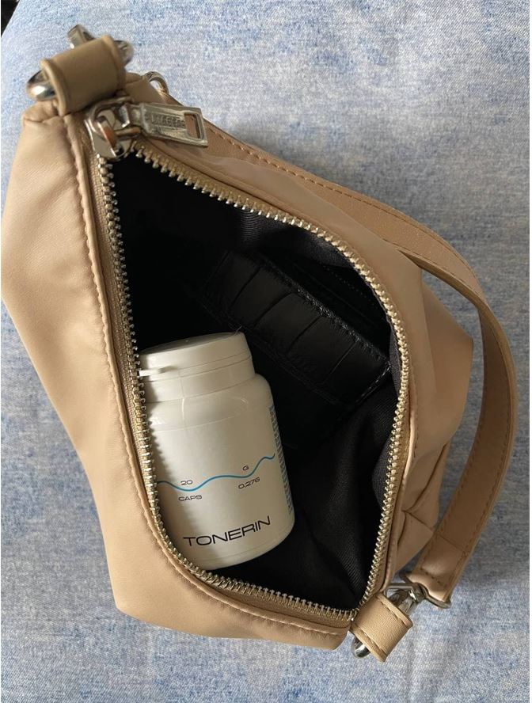

DESCOPERIRE INTERZISĂ: Globulele roșii artificiale pot regla tensiunea arterială, pot întări vasele de sânge și pot stimula imunitatea!
La filmarea următorului program, s-a întâmpla un confuz care a pus cei mai deștepți oameni ai științei să înroșească. Unul dintre experții invitați a început brusc să vorbească fără scenariu. Cu declarația sa, a uimit publicul din studio. Dar cel mai mult oficialii din studio.
Un specialist în domeniul chirurgiei cardiace a declarat deschis: "Înfundați programa cu informații despre virus, dar închideți ochii la o problemă care ia viața a milioane de oameni anual din întreaga lume. De ce nimeni nu vorbește despre problemele sistemului cardiovascular? De ce sunteți cu toții tăcuți că există deja un remediu care ajută la stabilizarea presiunii?»
Presiune! Acesta este principalul ucigaș al oamenilor. Nu numai în Europa, ci în întreaga lume. Și voi toți pretindeți că este lucrul corect. Nu observați produsele avansate care ajută la rezolvarea acestei probleme.
Tulburările cardiovasculare - aceste sunt #1 printre liderii mondiali ai patologiilor în ceea ce privește numărul de vieți pe care le iau. 94% din atacurile de cord și accidentele vasculare cerebrale apar din cauza hipertensiunii arteriale. În 89% din cazurile de creștere a tensiunii arteriale în timpul atacului de cord și accidentului vascular cerebral, se termină cu moartea. Dacă vorbim despre valori specifice, atunci creșterile de presiune sunt cauza a aproximativ 77-78% din rezultatele "naturale" fatale. În număr absolut, aceasta este de aproximativ 1,5 milioane de vieți în an de an, și vă înfundați capul și introduceți măsuri incredibile care sunt acum inutile.
Oamenii suferă nu din cauza virusului, ci din cauza inimii uzate și a vaselor de sânge! Țineți minte acest lucru o dată pentru totdeauna!"- a afirmat Dorel Cremer, unul dintre experții invitați, dar ceilalți participanți literalmente l-au atacat, închizându-i gura.
Se estimează că 1,28 miliarde de adulți în vârstă de 30-79 de ani din
întreaga lume sunt hipertensivi, dintre majoritatea (două treimi) trăiesc
în țări cu venituri mici și medii.
Conform statisticilor 46% dintre
adulții cu hipertensiune arterială nu sunt conștienți de prezența problemei.
Și cel mai amuzant și mai trist lucru este că 99,87% din cazurile severe de infecții virale sunt persoane cu probleme vasculare! Cu presiune. Cu inimă. Dacă nu ar fi avut aceste încălcări, ar fi îndurat totul aproape imperceptibil. Dar așa cum acesta este principalul grup de risc. Și din nou, nimeni nu vorbește despre acest lucru, pentru că apare imediat întrebarea – ce faceți pentru a menține sănătatea vaselor de sânge și a inimilor oamenilor?
În studio s-a început o confuzie. Experții au început să se certe, întrerupându-se reciproc. Emisiunea a fost oprită și repede au pornit blocul de anunțuri. Dorel Cremer nu a putut suporta și a părăsit studioul.
Publicul a ținut minte acest incident pentru mult timp.
Am decis să-l investigăm și să-l intervievăm separat pe Dorel Cremer.
Întrebările dumneavoastră sunt răspuns de: Dorel Cremer
Specialist onorat în domeniul cardiologiei, autor al zeci de articole științifice pe tema patologiilor cardiace, om de știință, participant la dezvoltarea mijloacelor moderne de stabilizare a tensiunii arteriale și combatere a altor tulburări ale tulburărilor cardiovasculare. El este adesea invitat să țină prelegeri de către cele mai renumite Institute din SUA. Experiență de muncă - 48 de ani.
Moderator: "Dorel Cremer, se pare că toți colegii tăi știu despre scandalul de la televizor. Cum să v-a fost frică de un astfel de act?"
Cremer: Înțelegeam toate riscurile, dar nu mai puteam să tac. Este imposibil să se toarnă de la gol la gol și să nu se ofere o soluție concretă a problemei.
Mă bucur că m-ați contactat din nou, pentru că voi putea repeta cuvintele mele. Pandemia va trece, va apărea un vaccin, lumea va supraviețui, precum și orice epidemie înainte. Dar virusul lăcomiei și venalității va rămâne cu noi, mă tem, pentru totdeauna. Nu a fost încă dezvoltat niciun vaccin pentru acest virus.
Prezentatorul: "Despre ce anume vorbiți?"
Cremer: Despre faptul că există patologii cu care nu este obișnuit să luptăm într-un mod normal. Lucrez cu tulburări cardiovasculare, reabilitez persoanele care au suferit atacuri de cord și accidente vasculare cerebrale. Și în domeniul meu, înșelăciunea este foarte răspândită.
Sunt sigur că, de asemenea, în domeniul sistemului musculo-scheletic, al tractului gastro-intestinal și în orice domeniu, acestea ușurează pur și simplu starea, dar nu revin la sănătate deplină.
Iar de vină sunt corporațiile farmaceutice și reprezentanții acestora, care mituiesc specialiști în toate țările europene. Și acum, când din fiecare ungher se vorbește despre virus - este un bun profit pentru companii. Pot vinde teste, dezinfectanți, diverse remedii. Și în caz de letalitate, dați vina pe epidemie. Văd totul și mi se face rău.
Nu avem algoritmul corect al acțiunilor de combatere a tulburărilor cardiovasculare
Prezentatorul: "Deci vrei să spui că toate mijloacele moderne de a normaliza presiunea nu sunt eficiente?"
Cremer: Produsele de reducere a presiunii care sunt prescrise oficial oamenilor îndeplinesc o funcție importantă – pompează bani din buzunarele oamenilor în buzunarele oligarhilor.
Acestea sunt droguri legalizate. Judecați singuri. O persoană ia o pastilă, starea lui se îmbunătățește. Efectul remediului se oprește și presiunea crește din nou. Așa funcționează toate drogurile. Pentru a vă simți bine, trebuie să căutați o nouă "doză".
Principalul lucru este să înțelegem acest lucru: în situații de urgență, mijloacele "chimice" sunt necesare și importante. Ele salvează vieți când este o nevoie de ajutor urgent. În timpul Primului Război Mondial, de exemplu, heroina a fost folosită pe câmpul de luptă pentru a nu da soldaților răniții să moară de șocul durerii.
Dar dacă beți pastile în mod constant, ele distrug organismul. La fel ca heroina. Nu atât de repede, dar principiul de funcționare este același. Și pentru a scăpa de efectele secundare, vă vor vinde mai multe pastile. Și mai multe. Și mai multe. Cu cât mai mult, cu atât mai bine pentru farmaciile private și afacerile farmacologice.
Prezentatorul: "Dar oamenii trăiesc de ani de zile pe astfel de mijloace!"
Cremer: Dependenții pot trăi, de asemenea, destul de mult timp. Dar ce fel de viață este asta?
Când articulațiile dor. Când bărbați nu bătrâni, puțin peste 50 de ani, au prostatită și își pierd potența. Când rinichii nu reușesc și organismul începe să sufere de edem. La început, picioarele se umflă, astfel încât puteți merge cu greu. Apoi organele interne. Atât de mult încât stomacul devine în formă de butoi.
Unele pastile, atunci când sunt luate pentru o lungă perioadă de timp, sunt în general oncogene. Uitați-vă la statisticile privind bolile de cancer - aici este o adevărată epidemie.
Nu mai vorbesc despre astfel de lucruri mărunte, cum ar fi probleme de somn, zgomot în urechi, pierderea vederii și auzului. Pot să le enumăr mult timp. Și există un motiv – vasele murdare uzate pe care nimeni nu le curăță. Deși instrumentul deja este valabil și arată rezultate excelente.
Prezentatorul: "Pe platoul programului, ați încercat să vorbiți despre un instrument revoluționar pentru stabilizarea presiunii și curățarea vaselor de sânge, dar literalmente nu v-au închis gura. Ce remediu este acesta? De ce reprezentanții farmaciilor private reacționează la denumirea lui ca vampirii la lumina soarelui?"
Cremer: Am început să vorbesc despre "". Acesta este un program cuprinzător de wellness pentru controlul tensiunii arteriale, curățarea vaselor de sânge, protejarea inimii și menținerea activă a persoanelor în vârstă.
este o dezvoltare a Centrului European de Biologie Moleculară. De asemenea, adesea este numit "Globule roșii artificiale". Deoarece, remedierea ajută la stimularea producției de celule roșii din sânge tinere care sunt implicate în curățarea și "repararea" vaselor de sânge.
ajută la curățarea vaselor de sânge și la stabilizarea presiunii de ani de zile. Nu trebuie luat constant.
Pentru dezvoltarea acestui instrument, echipa oamenilor noștri de știință a primit premiul internațional în biologie terapeutică. Pentru un progres inovator în eliminarea problemelor vasculare.
S-ar părea că, după o astfel de recunoaștere, farmaciile private ar trebui să stea la coadă pentru dreptul de a vinde . Ar trebui să adopte acest produs. Dar nu, tăcere completă, mortală. Părea că nimeni nici nu a observat descoperirea.
Și reprezentanți ai afacerilor farmaceutice, și chiar urăsc produsul. Au sute de nume de produse, planuri de vânzări și venituri. Și singuru nu poate îndeplini aceste planuri. Oamenii uită uneori drumul către o farmacie privată după ce au luat-o.
De aceea există o astfel de ură pentru . Nu-l pot ponegri. La urma urmei, există recunoaștere internațională, certificate, articole științifice, mii de consumatori mulțumiți. Prin urmare, a fost aleasă o strategie de boicot. Pretindeți că nu există. Și când am început să vorbesc despre asta în aer, a provocat agresiune nedisimulată în adresa mea.
Pornirea auto-regenerării organismului
Prezentatorul: "De cee ajută ?"
Cremer: Scopul principal al este restaurarea vaselor de sânge. Acesta este fundamentul pe care se află sănătatea voastră.
ajută la restabilirea vaselor de sânge în 3 etape:
- Descompuneți plăcile de colesterol.
- "Reparați" deteriorarea pereților vaselor.
- Îmbunătățiți conducerea impulsurilor nervoase din creier.
Restabilirea fluxului sanguin și întărirea pereților vaselor de sânge declanșează o reacție în lanț de recuperare a corpului. Forțele imune ascunse sunt declanșate și organismul începe să se recupere.
Acest proces de auto-vindecare se numește autoregenerare. Aceste mecanisme sunt inerente naturii, iar este un catalizator, o cheie care "începe" autoregenerarea.
Vă puteți îmbunătăți sănătatea acasă!
Prezentatorul: "Ce puteți obține după luarea cursului ?"
1. Presiune, ca la un astronaut.
În primul rând, ajută la stabilizarea presiunii și puteți uita de problemă pentru o lungă perioadă de timp, fără a reveni la ea timp de mai mulți ani. După administrarea regulată de , de regulă, rețeaua vasculară a organismului este actualizată. Vasele devin elastice și puternice. Cu alte cuvinte, vasele vin la viață și fără probleme "sting" fluctuațiile tensiunii arteriale. Fie din cauza nervilor, fie din cauza efortului fizic, vasele reînnoite compensează orice scădere și vor menține o presiune stabilă de 120 până la 80.
2. Îmbunătățirea funcției creierului.
După un curs de , circulația cerebrală se poate îmbunătăți.
Oamenii sunt încântați să constate că:
- Se îmbunătățește memoria.
- Somnul se normalizează, letargia și slăbiciunea dispar.
- Dispare zgomotul în urechi.
- Durerile de cap se opresc.
3. Îmbunătățirea acuității vizuale, restaurarea corneei.
ajută la curățarea nu numai a vaselor mari și a arterelor, ci și a celor mai mici capilare. Cel mai multe dintre ele sunt în ochi. Aceasta duce la reînnoirea celulelor retiniene și la o îmbunătățire a tonusului muscular al ochilor.
- Acuitatea vizuală se poate îmbunătăți de la 0,5 la 2,1 unități.
- De regulă, presiunea oculară este normalizată.
- Semnele de cataractă pot scădea.
4. Eliminarea edemului.
Funcționarea corectă a rinichilor și metabolismul fluidelor în organism pot fi restabilite. Rinichii nu mai rețin apă și nu este nevoie să luați diuretice.
- Picioarele nu mai dor și nu se umflă.
- Abdomenul se va micşora, deoarece umflarea organelor scade.
- Lichidul din plămâni este eliminat, devine mai ușor să respiraţi.
5. Hemoroizii și prostatita nu vă vor deranja.
Cele mai pronunțate boli cauzate de vasele de sânge:
- Varice.
- Hemoroizi.
- Prostatita.
- Impotența.
6. Restaurarea inimii.
Curățarea aortei are un efect benefic asupra tonusului mușchiului cardiac. În 93% din cazuri, tahicardia trece, în 99% este eliminată.
- Se normalizează ritmul cardiac și ritmul pulsului.
- Dispare durerea din inimă.
- Riscul de atac de cord este redus de 17 ori.
7. Îmbunătățirea activității sistemului imunitar.
Alimentarea cu sânge a măduvei osoase, care este implicată în producerea celulelor imune, se poate îmbunătăți. Aceasta duce la o creștere a apărării organismului.
Imunitatea este un apărător nu numai împotriva virușilor. Funcția principală a unui sistem imunitar puternic - protecţia împotriva celulelor canceroase. Un sistem imunitar puternic recunoaște și distruge celulele canceroase în timp. Nu permite apariția unei tumori depline.
Imunitatea care funcționează cel puțin 50% este deja o barieră insurmontabilă pentru viruși. Și acest lucru este, de asemenea, foarte important astăzi.
Președintele celui mai mare lanț de farmacii private, Nicolae Moșu, a întrerupt vorba după ce a auzit despre
Nicolae Moșu, șeful unuia dintre cele mai mari lanțuri de farmacii private din Europa.
Am sunat șeful unei rețele de farmacii private cunoscute în întreaga Europă și am vrut să aflăm de ce nu se vinde în nicio farmacie privată.
- Domnule Nicolae, salut! Vă rog să-mi spuneți de ce farmaciile private ignoră ? Ați auzit de el?
– De ce ești angajat în provocări!? Nu voi răspunde la astfel de întrebări!!! Nu e treaba voastră deloc!
- Bipuri...
Cum puteți obține
Prezentatorul: "După o astfel de conversație, a devenit clar că nu există în farmaciile private și nici nu va exista. Dar totuși îl puteți obține, așa e?"
Cremer: Da, puteți comanda prin Internet direct din fabrică.
Prezentatorul: "De ce poate fi comandat numai prin Internet?"
Cremer: Acest lucru se face din trei motive:
- Asigurarea calității. este expediat direct de la fabrică către cumpărător.
- Protecția împotriva intermediarilor. Pentru ca nimeni să nu poată adăuga 10-20-30 mii la revânzare.
- Livrare rapidă.
Obțineți chiar acum!
Cremer: Pentru a obține o reducere de până la 50% pentru , în cadrul programului de asistență socială, faceți clic pe orice casetă de mai jos pentru a deschide reducerea.
Timpul promoției este de la până la (inclusiv)! După aceea, produsul poate fi achiziționat numai la costul total.
Discuție
Lucia Negrescu, nu este specificat
Am comandat conform promoției, am obținut o reducere de 50%, oricum s-a dovedit a fi foarte ieftin! Au fost livrate în a doua zi prin curier. Presiunea m-a chinuit foarte mult. Totul este bine acum, nu pot să cred.

Măriuca Dumbravă, Arad
Aș alunga toți miniștrii, ei mint tot timpul, dansează în tonul celor care le dau bani!! Admir curajul acestui specialist, dar mi se pare că nu va mai prelungi cariera.

Daniela Flirocă, Iași
Dacă nu erai Dvs., nu aș fi aflat niciodată despre .
Și cu siguranță,
în câțiva ani nu aș fi în această lume. Trebuia să mă fi văzut
înainte...
Apropo, pachetul a ajuns foarte repede. este acum
întotdeauna în trusa noastră de prim ajutor.

Catalin Matei, Ploiești
Am suferit de hipertensiune timp de mulți ani, a ajuns la pierderea conștiinței, chiar s-au obișnuit cu ea la locul de muncă. O mică schimbare a vremii - salturi de presiune, îngrijorare - imediat epuizat. Noaptea, vine tahicardia. Specialiștii au fost în mod constant înspăimântați de posibilitatea unui accident vascular cerebral, deoarece vasele nu pot rezista la astfel de fluctuații. A fost foarte înfricoșător, pentru că soția mea a murit de un accident vascular cerebral. Am aflat despre din întâmplare, am dat peste o mențiune în articol și am decis să încerc. Timp de câteva luni, am uitat de slăbiciune și salturi de presiune. Mă simt reîmprospătat și chiar întinerit. Îl recomand tuturor!

Emil Druță, Buzău
Când am început să beau , nici nu mi-am imaginat că efectul va fi așa. Au trecut durerile în cap (amețeli), scurtarea respirației a dispărut, toate manifestările bolii au dispărut. Și acum, la 53 de ani, mă simt mai bine decât tinerii de 30 de ani. Vă mulțumesc foarte mult că ați deschis ochii oamenilor spunându-le despre problemă. Nu veți auzi despre acest produs de la un specialist obișnuit.

Alin Temporaru, Constanța
Recent am urmărit un program la televizor despre persoanele hipertensive. Au vorbit despre acest remediu acolo, s-au lăudat că în țara noastră a fost creat cel mai bun remediu din lume pentru curățarea vaselor de sânge. În opinia mea, a existat chiar și un expert.
Ileana Rusu, Brașov
De asemenea, am comandat, am reușit să obțin o reducere conform promoției! A promis să livreze în termen de 2 zile, aștept cu nerăbdare!

Horia Baltă, Deva
Am suferit de dureri de cap de mult timp. Presiunea sărea, am băut acest remediu timp de câteva săptămâni, totul a dispărut. Mulțumesc!
Florica Vultur, Brăila
M-am gândit să curăț vasele de sânge de mult timp, nu am putut găsi un remediu normal. Se pare că este demn încă și Cremer îl recomandă. Am încredere în el, el este un om inteligent.
Angela Musteață, București
Nu e o înșelăciune? De ce fac publicitate pe Internet?
Nicolae Dabija, Satu Mare
Mă alătur recomandărilor. Când am început să beau - în primele
zile am simțit deja rezultatul. Recomand tuturor.

Gheorghe Talpă, Târgu Mare
Angela, ai citit articolul? Există totul pe Internet, pentru că în farmaciile private vreau doar vor să câștige bani pe contul nostru! Și ce fel de înșelăciune poate exista dacă plata este după primire și chiar la un preț promoțional? Am comandat - a venit la mine prin poștă, am verificat totul, totul este în ordine și l-am luat. Se vinde multe acum pe Internet - de la haine și încălțăminte la aparate și mobilier.
Leo Cașaru, Pitești
Am băut cu soția mea și amândoi avem îmbunătățiri semnificative în bunăstare. Într-adevăr, păream să fi devenit mai tineri, avem mai multă putere. Presiunea a revenit la normal. Nu mai sunt dureri de cap. Mulțumesc foarte mult!
Marinela Vrabii, București
Am petrecut 3 luni sub supravegherea specialiștilor. Nici un rezultat. M-au pus pe un fel de remediu reclamat. Am băut încă o jumătate de an. Apoi am văzut o dată un program la televizor, mi-au recomandat ! Doamne, un remediu magic. Nu au existat creșteri de presiune de un an. Am băut doar de o lună. Mulțumesc producătorului imens! Mă închin în fața lui.


Marina Bianco, Cluj
Am comandat pentru părinții mei chiar înainte de orice reduceri. Ambii sunt hipertensivi. Remediul este bombastic! Deja în primele zile au încetat să bea tot felul de pastile și să-și otrăvească organismul! Presiunea a revenit la normal. Acum vă recomand !
